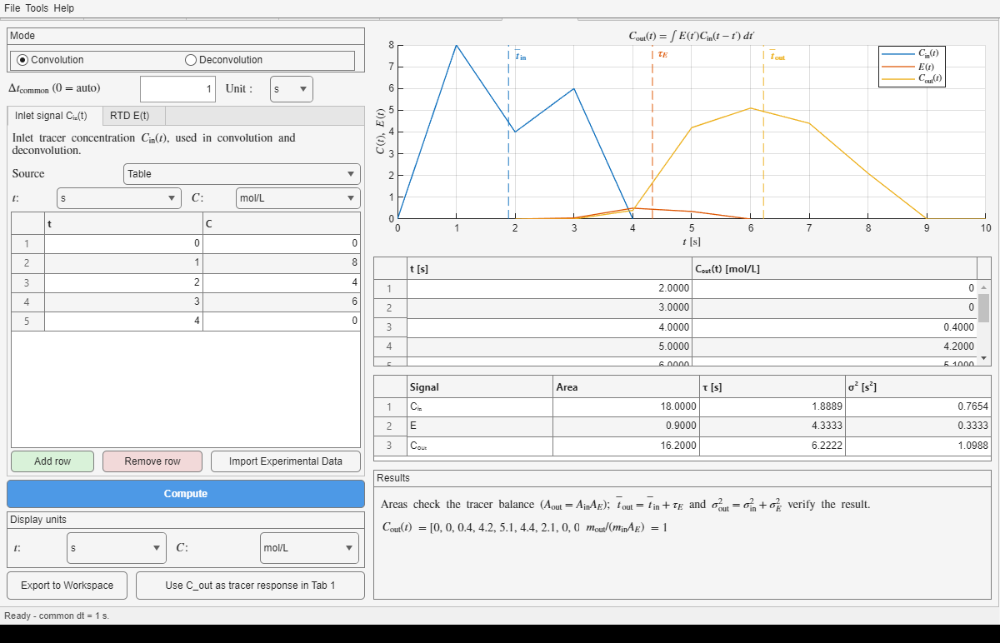
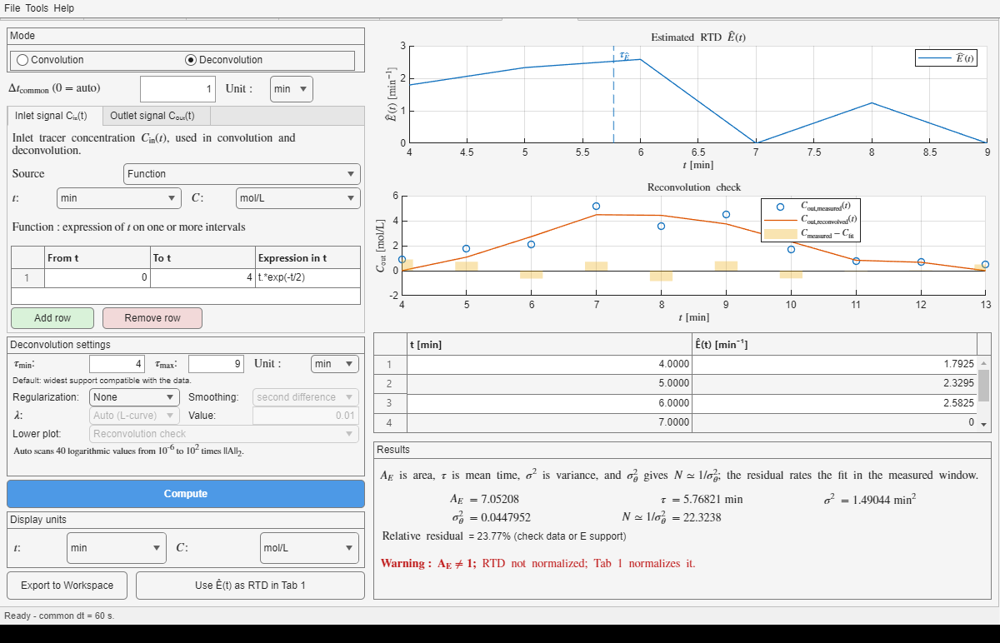
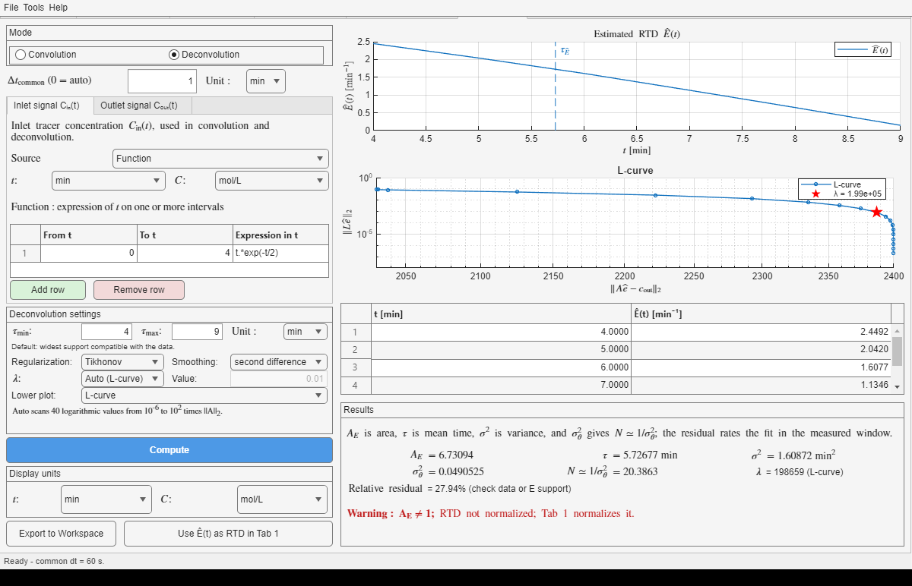

Use Convolution to predict the outlet tracer signal from an inlet signal and a residence-time distribution (RTD). Use Deconvolution to estimate the RTD from measured inlet and outlet signals.
| Control | What to enter | Why it matters |
|---|---|---|
| Table | Time/value pairs. Use Add row and Remove row; Import Experimental Data reads the first two numeric columns of an Excel, CSV, or TSV file. | Best for sampled plant, laboratory, or manually transcribed data. Check that times increase and that the recorded window contains the complete signal. |
| Function | One or more rows with From t, To t, and an expression in t. Adjacent intervals may describe a piecewise signal. | Best for analytical pulses and idealized inputs. Intervals must not overlap. |
| Signal units | Select a time unit for every signal and a concentration unit for Cin and Cout. E is interpreted in the reciprocal of its selected time unit. | Inputs may use different units; the calculation converts them consistently before combining them. |
| Δtcommon | Enter the calculation step and its unit, or enter 0 for automatic selection. | All signals are resampled on this grid. A smaller step resolves sharper features but creates more points; the status bar reports the step actually used. |
| Display units | Choose the time and concentration units shown after calculation. | These selectors change axes, tables, and displayed moments only. They do not recalculate or alter the underlying result. |
Convolution applies the vessel RTD to the inlet history. The result is the outlet history that would be observed if the vessel were linear and time invariant under the test conditions.

saves/SECT01.mat from the File menu and select Compute. The table signals use seconds; the calculated outlet and its moments appear on the right.Deconvolution finds a nonnegative E(t) whose reconvolution with the inlet resembles the measured outlet. The estimate is constrained to the delay support from τmin to τmax. Use the narrowest range justified by the equipment and timing data: an unnecessarily wide support adds unknowns, while a range that is too narrow forces real response outside the model.

saves/SECT02.mat and select Compute. The inlet is a Function, the outlet is measured Table data, and the stated E support is 4 to 9 min.Deconvolution amplifies measurement noise. Select Tikhonov when an unregularized E follows point-to-point noise or contains implausibly sharp changes. Keep None for exact data unless there is a clear reason to smooth it: regularization can otherwise oversmooth the true RTD and increase the mismatch.
| Choice | Use it for | Interpretation |
|---|---|---|
| Smoothing: second difference | The usual noisy experimental RTD. | Discourages curvature, producing a smoother shape while allowing its overall level to be determined by the data. |
| Smoothing: identity | Cases where limiting the magnitude is more appropriate than smoothing curvature. | Penalizes the size of E itself and can shrink the whole estimate. |
| λ: Auto (L-curve) | A defensible first choice when λ is unknown. | Selects the marked corner that balances reconvolution error against the smoothing measure. |
| λ: Manual | Sensitivity studies or a value justified from repeated experiments. | Enter the nonnegative strength directly; compare both the reconvolution and the resulting RTD as it changes. |

Use it to see where the fitted outlet misses measured points. Structured residuals suggest a wrong support, baseline problem, timing mismatch, or model limitation rather than random noise alone.
Use it to inspect the tradeoff behind automatic λ. The marked point is the selected balance, not proof that the RTD is physically correct; still check area, support, shape, and reconvolution.
| Result | Meaning | Engineering use |
|---|---|---|
| Area | The trapezoidal integral of each signal. For E, AE should be near 1; in convolution, Aout should equal AinAE. | Checks tracer balance and whether the recorded window includes the full response. A mismatch can expose lost tracer, a baseline error, truncated tails, or inconsistent units. |
| τ | The signal mean time; for an RTD it is the mean residence time. Mean times add in convolution: mean(Cout) = mean(Cin) + τE. | Compare τE with V/Q. Qτ below nominal V indicates inactive or dead volume; an unexpectedly early response can indicate short-circuiting. Mean times also add across independent vessels in series. |
| σ2 | Variance in time units squared. Independent convolution variances add. | With measurements immediately before and after a vessel, obtain its contribution by the two-point method: σE2 = σout2 - σin2. It separates spreading caused by the vessel from spreading already present at the inlet. |
| σθ2 | Dimensionless variance, σ2/τ2. | Compares RTD breadth independently of vessel time scale. Use N ≈ 1/σθ2 as a tanks-in-series estimate. For axial dispersion, interpret breadth with the Peclet number Pe: high Pe means weak dispersion and a narrow RTD; low Pe means stronger dispersion and a broader RTD. |
| Relative residual | The reconvolution error relative to the measured outlet magnitude over the measured window. | Read the displayed rating as a fit screen: below 5% is good, 5–15% is acceptable, and above 15% asks you to check data or E support. A small value does not by itself validate the RTD physically. |
| Warning AE ≠ 1 | The estimated E does not have unit area within the chosen support. | Check tracer recovery, baselines, tails, units, and support before accepting it. Sending it to Tab 1 normalizes it, but normalization does not repair poor data or a wrong support. |
| λ | The Tikhonov regularization strength; the result shows whether automatic selection used the L-curve. | Larger λ favors the selected smoothing rule more strongly and usually sacrifices reconvolution fit. Compare nearby values manually when the automatic corner gives an implausible RTD. |
| Button | What it does | Important limitation |
|---|---|---|
| Export to Workspace | Creates convolutionResult with inputs, result, diagnostics, mode, and selected display units. | The stored calculation signals are in the app's consistent internal units; the selected display units describe presentation. |
| Use Cout as tracer response in Tab 1 | In Convolution mode, sends the calculated outlet pulse-response data to RTD Analysis. | The outlet curve equals the vessel RTD only when Cin is an ideal impulse. With a finite inlet pulse, it is a tracer response broadened by both input and vessel. |
| Use Ê(t) as RTD in Tab 1 | In Deconvolution mode, normalizes the estimated E and loads it as the Tab 1 RTD. | Resolve warnings and judge the fit first. Normalization changes area, not the evidence quality or the chosen support. |